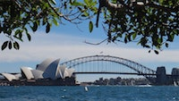
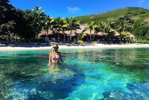
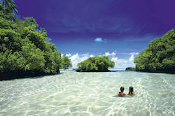
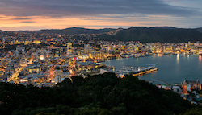

Vakantiebestemmingen in Oceanië
Nieuwsgierig naar Oceanië? Boek nu een reis naar een geweldige plaats in Oceanië. De beroemde plekken van Oceanië zijn omringd met water en natuur. Bent u toe aan luxe en comfort of wilt u juist een uitdagende reis? Dan is er zeker veel te beleven in Oceanië!
Sydney
Bezoek nu deze wereldstad in hartje Australie! Maak kennis met de cultuur en kijk je ogen uit naar alle bezienswaardigheden. Maak en tocht in de stad of bezoek juist de dorpjes rondom Sydney. Er is hier van alles te beleven! Bezoek de populaire dierentuin of laat u verwennen in een spa. Mis deze kans niet en eef een bezoekje aan de oofdstad van Astralie waar al uw romen uitkomen.
Boek nu deze reis v.a. €699 p.p.
Fiji
Houten hutjes met rieten daken staan in een lichtturquoise zee, tegen een achtergrond van glanzend wit zand, sierlijke kokospalmen en weelderig oerwoud. Zingende Fijianen in rokken van blaadjes en bloemenkettingen heten je welkom in Fiji. Het paradijs van Melanesië. Fiji bestaand uit honderden eilanden met zon, zee en strand en een overvloed aan luxe en comfort. Laat je verwennen met paradijselijke stranden en duik op Fiji's kleurrijke plekken.
Boek nu deze reis naar Fiji v.a. €1049 p.p.
Samoa
Wat alle paradijselijke brochurefoto's menen te beloven, behoort in Samoa tot de werkelijkheid. De tropische eilandengroep is een aantal van de meest verleidelijke zandstranden rijk. Met kokospalmen, satijnen zand en kleurrijk koraal. En in tegenstelling tot haar toeristische buur Fiji, geniet je in Samoa van een strand voor jou alleen. Laat u verwennen in luxe en comfort en bezoek de mooie bezienswaardigheden van Samoa.
Boek nu een reis naar Samoa v.a. €899 p.p.
Wellington
Wellington is de intieme hoofdstad van Nieuw-Zeeland. Het is een ontwikkelende en kunstzinnige stad vol met nationale schatten waar veel te beleven is. De stad ligt aan Port Nicholson. Dit is een van de mooiste natuurlijke havens ter wereld. Wellington en omgeving hebben een groot aantal aan bezienswaardigheden en winkelcentra waar populaire restaurants bevinden. Deze cultuurstad biedt u een ontspannen sfeer.
Boek nu een reis naar Wellington v.a. €1585 p.p.